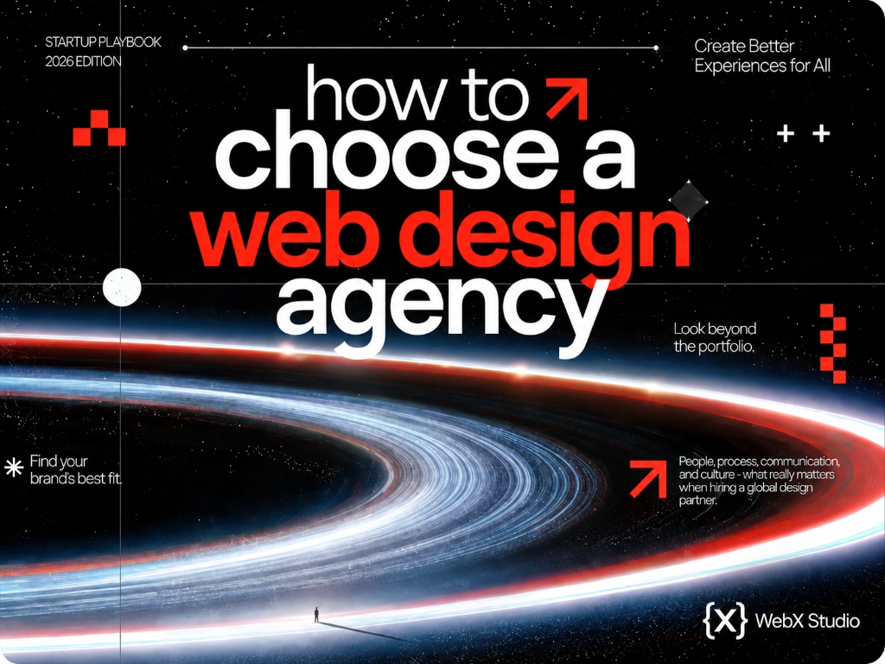

How to choose a web design agency (when the best one might be in another country)
Hiring a studio across a border used to feel risky. In 2026 it’s ordinary - and often the smartest way to get world-class work without a world-class invoice. Here’s how to choose well and run the project so it actually ships.

The agency that builds the best website for your business may not be down the road - it may be in Lisbon, Lahore, Ludhiana or Lagos. Remote collaboration tools, async workflows and a genuinely global talent pool have made geography almost irrelevant to quality. What hasn’t changed is that choosing the wrong partner - local or remote - is expensive and slow.
This is the checklist we’d hand a friend hiring any studio, including how to do it confidently across time zones.
Don’t hire a country, a price or a tech stack. Hire evidence - a portfolio of shipped work, clear communication, and a process you can actually see. Everything below is a way of testing for those three.
1. Judge the portfolio, not the pitch
A deck can say anything. Live, shipped work can’t lie. Open the agency’s portfolio on your phone: does it load fast, feel considered, work on a small screen? Click through to real, live URLs - not just mockups. If their own site is slow or generic, assume yours will be too.
2. Look for range and depth
You want a team that can both design something beautiful and engineer it properly. A studio that has shipped a polished brand site and something genuinely hard - an ecommerce platform, a custom build, an ERP or web app - has proven it can handle complexity, not just decoration.
3. Ask these seven questions
- Who exactly will work on this? Make sure the people in the pitch are the people doing the work.
- What does your process look like, week by week? Vague answers mean a vague project.
- How do you handle revisions? Know the number of rounds and what counts as one.
- What do you need from me, and when? Good studios manage your deadlines too.
- Who owns the site, the code and the accounts at the end? The answer must be “you.”
- How is performance and SEO handled? If it’s an afterthought, keep looking - here’s why that matters.
- What happens after launch? Support, hosting and edits should be clear up front.
The best signal isn’t the cheapest quote or the slickest deck. It’s a studio that asks you sharper questions than you asked them.
4. Red flags to walk away from
- No live portfolio, or only templated demos.
- A quote with no breakdown of what’s included.
- Promises of “#1 on Google” - no honest studio guarantees that.
- Slow, vague or copy-pasted replies during the sales conversation. It only gets worse after you pay.
- Reluctance to hand over ownership of your own site or domain.
5. Making a remote, cross-border build work
Hiring internationally is only an advantage if you run it well. The teams who get great results from a remote studio do five things:
- Agree on overlap hours. Even two shared hours a day keeps momentum. A studio used to working across time zones will already have an async rhythm.
- Insist on async updates. Looms, shared boards and weekly written summaries beat hoping for a call.
- Use milestones, not vibes. Tie payments to clear deliverables everyone can see.
- Write things down. A shared brief and decision log removes the “I thought you meant” problem.
- Start small if unsure. A landing page or a paid discovery sprint is a low-risk way to test the relationship before the big build.
The cost reality (without the catch)
A capable studio in India or similar markets can deliver the same standard of design and engineering for a fraction of what an equivalent US or UK agency charges - not by cutting corners, but because their cost base is lower. The savings are real; the risk is only in failing to vet. Apply the checklist above and location becomes a pure advantage. We unpack the actual numbers in how much a website costs in 2026.
Putting us through the checklist?
Good - that’s exactly how to hire. Browse our live work, then tell us about your project. We reply within two business days, wherever you are.
Start a conversation